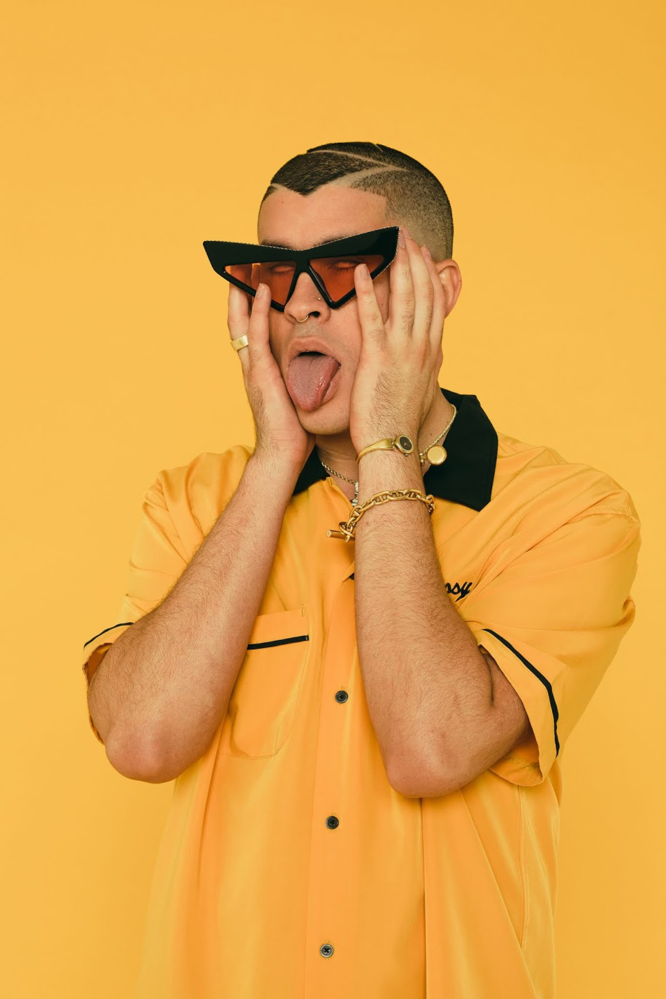
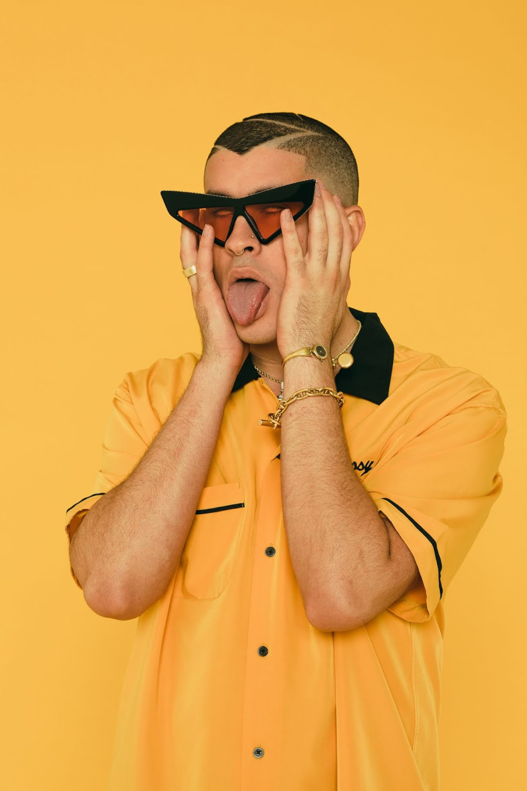

Bad Bunny
Bad Bunny nació como Benito Antonio Martínez Ocasio en San Juan, Puerto Rico, el 10 de marzo de 1994. Es compositor y cantante de música urbana, sobre todo trap y reggaetón.
Aunque nunca tomó clases formales de música ni estudió ningún instrumento, es cantante, compositor y creador de sus propias canciones. Las primeras muestras de su arte se vieron en Youtube, donde poco a poco empezó a cosechar fans.

 
